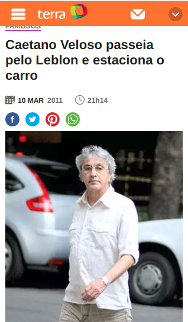

#ajudaLuciano — como escrever um post de blog
Escrever texto é muito difícil. Pra nós programadores, as coisas muitas vezes fazem total sentido dentro da nossa cabeça de uma maneira intuitiva. Mesmo assim, colocar as ideias no papel parece ser uma tarefa monumental. Eu, no entanto, nunca tive muito problema: sou formado em jornalismo (muahaha >:D). Vim aqui compartilhar com vocês algumas das coisas que me ajudam a escrever um post ou formatar uma palestra. Vamos lá!
Problemas mais comuns
Quando eu converso com a galera da Labcodes, eu noto que os problemas mais comuns são os seguintes:
não saber qual assunto abordar;
não saber o que falar sobre dado assunto;
não conseguir encadear o conteúdo direitinho;
não saber como concluir ou resumir o texto.
A questão é que jornalistas fazem isso o tempo todo; até quando não devem.
A matéria jornalística que chocou o mundo
E se você tá se perguntando, sim, nós temos uma receitinha de como fazer essas chocantes matérias.
Ao pensar sobre o assunto, o importante é o público
Quando você começa a pensar sobre um post/palestra, a primeira coisa que eu gosto de fazer é pensar em quem vai ler/assistir ao conteúdo. Esse post é pra prospectar clientes? Então de repente vale ter os valores do cliente na cabeça. É uma palestra pra iniciantes? Então vale deixar de lado os jargões.
Outro fator importante é ter em mente que um post é uma via de mão dupla. Você, autor, está contribuindo com algo que você pode dar (conteúdo, entretenimento) em troca pelo que o leitor pode dar: atenção.
Manter essa troca de informação por atenção é essencial se você quer que as pessoas continuem lendo seu texto.
Pra fechar essa parte, uma boa dica pra resolver sobre qual assunto abordar é pensar sobre o que te frustra diariamente como profissional. Os ModelSerializers do DRF te incomodam por serem acoplados demais? O docker é muito complicado de configurar? Então provavelmente esses são assuntos que poderiam interessar a outras pessoas. E com o assunto em mãos…
…tudo começa com uma frase
A gente tem que começar de algum lugar, certo? Pessoalmente, acho a primeira frase muito importante. Ela delimita o tom do texto; e ela nem precisa dar informações sobre o assunto. Pode ser algo como:
Fazer deploy é chato.
É 2019 e ainda tem muita gente que não usa grid nos layouts.
Essa é a história de como eu descobri o Flask.
Escrever texto é muito difícil.
Pegando o exemplo do deploy, vemos que a primeira frase geralmente é o porquê de você estar escrevendo o texto. O que você quer com essa frase é dar contexto e se engajar com o leitor. Fale algo que faça o leitor pensar “putz, é verdade, deploy é chato mesmo, quero ver que que esse cara vai falar”.
E com o tom dado, a gente pode continuar o primeiro parágrafo com informações mais precisas sobre o tópico. Você poderia continuar, por exemplo, com “Aqui na Labcodes, a gente resolveu esse problema com x, y, z de uma maneira bem elegante e simples”. Algo que deixe claro sobre o que você vai falar, deixando os detalhes pro corpo do texto.
Pra concluir o primeiro parágrafo, é importante ter algo que ligue o que você disse com o que você vai falar. Ainda no caso do deploy, poderia ser algo como “Mas as soluções que nós demos criaram um novo desafio: como vamos usar x, y, z nos nossos projetos legados?” que deixaria o leitor pronto e interessado em ler a próxima parte do texto.
A estrutura de contexto > informação > ligação é uma boa receita tanto pra começar quanto pra escrever todo o texto.
E com o primeiro parágrafo rascunhado, as coisas ficam bem mais simples.
Escrevendo o corpo do texto
Escrever o corpo do texto geralmente é mais fácil. Nesse ponto, você provavelmente já tem uma noção de quais tópicos abordar, e já dá pra montar qual parte vai ver depois da outra. Mesmo assim, é importante ter algumas coisas sempre em mente.
Lembra que eu falei pra ter em mente seu público ao escrever? No corpo do texto, isso é importante pra você saber como dosar partes de respiro. Essas partes geralmente são imagens, gifs, subtítulos ou frases de destaque.
No corpo do texto, mais que nunca, a troca entre informação e atenção é essencial.
Pra me manter focado, eu gosto de me dar um número de minutos pra escrever cada parágrafo. Isso me previne de ficar mexendo em coisa que já tá pronta enquanto eu podia estar pensando em outra coisa. Escrever é um processo cíclico e de descoberta, então é melhor você escrever muito e cortar o que é demais do que ficar polindo um parágrafo e nunca terminar o texto.
De resto, é repetir a estrutura de contexto > informação > ligação e escrever a conclusão.
Legal, mas meu problema é exatamente concluir!
Relaxa, já chegamos no que te interessa então! Como sempre, tudo depende de quem vai estar lendo o texto e qual sentimento ou informação você quer que a pessoa saia dali sentindo ou sabendo. Pra facilitar, eu gosto de falar sobre três possíveis padrões de conclusão:
recapitulação;
opinião;
referenciamento.
Recapitulação é o mais autoexplicativo. Pense exatamente sobre o que a pessoa precisa sair do post sabendo, ou o que é mais difícil de entender, e escreva sobre. Um exemplo seria o seguinte:
“Vimos hoje que o Django Rest Framework tem muitos pontos de acoplamento, mas que com uma boa estrutura de código, podemos testar tudo sem abrir mão da documentação automática. Lembre-se de separar bem a lógica de negócio do framework e testar tudo direitinho. Nos vemos por aí, até a próxima!”
Opinião é um pouquinho mais complicada. Se você está concluindo com uma opinião, é importante que todo seu texto tenha já expressado sua opinião, e que a conclusão seja só para que a pessoa saiba resumidamente qual opinião foi dita. Por exemplo:
“O Django Rest Framework deixa muito a desejar. Os ModelSerializers, além de lentos, geram um acoplamento muito grande entre os Models e a API. Pense bem se ele é a melhor opção antes de entrar de cabeça, e cuidado com os hacks. Nos vemos por aí, até a próxima!”
A forma mais popular de concluir, no entanto, é o referenciamento. Basicamente, você deve falar sobre onde a pessoa pode adquirir mais informações sobre o assunto. Algo como:
“Caso queira saber mais sobre o Django Rest Framework, leia a documentação e veja essa app Django que eu criei com os exemplos. Não tenha medo de comentar com as suas dúvidas, e se quiser dicas sobre casos específicos, falem comigo no telegram da Python Brasil. Nos vemos por aí, até a próxima!”
Epa, então fechou, né?
Pera, calma, tenho umas coisinhas pra falar ainda, mas é jogo rápido! Com o texto pronto, se dê um tempinho pra colocar em bold as palavras-chaves; isso ajuda muito quem tá lendo rápido ou relendo pra pegar referências.
E se você não tá se sentindo bem com alguma parte do texto, tente identificar qual frase ou qual termo tá te deixando desconfortável. Às vezes é uma palavra, às vezes é o fluxo da frase, mas muitas vezes é a ordem gramatical mesmo. Cara, não vou tocar na gramática não.
No pior dos casos…
…comece do zero. Sério. Como tudo na vida, escrever bem é questão de prática. No começo, vai demorar muito e vai ser um processo chatinho, mas depois de você internalizar o que eu disse aí em cima, você vai conseguir criar em cima disso com uma certa facilidade.
E se teve algo que você queria que eu falasse sobre e eu não falei, pode me xingar no twitter. Mentira, melhor que você me diga nos comentários mesmo, com calma, pra eu poder complementar depois. Valeu pela atenção, e nos vemos na próxima!